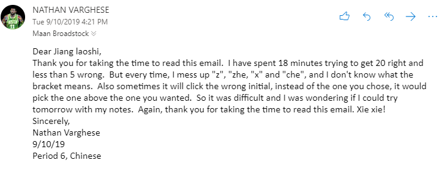
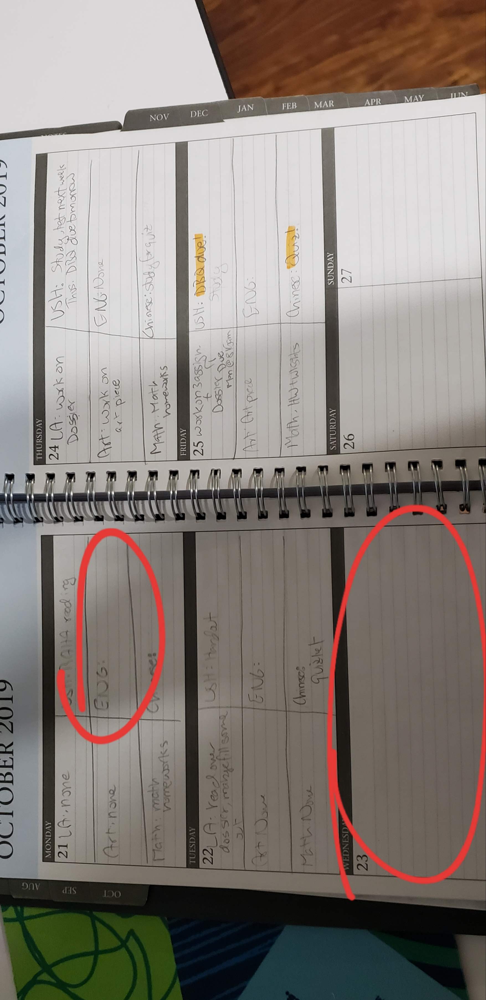

This is a video I recorded at the beginning of the school year. The goal of this video was to explain how I though the year would go and how the learning curve was going to feel like it. This video served the goal of looking back at the end of the year and how my forecast of the year was like. To tell you what I reflected on, the year wasn't as bad as the 8th grade teachers made it sound like, but I am glad that they strongly warned us for what it was going to be like.
9th Grade Page
Greatest Growth
I believe I have grown in time management and self-advocacy in my 9th grade year at the Dayton Regional STEM School. This is for a few reasons. Self-Advocacy is when you take responsibility to answer the learning needs you have. This is something I had to do sometimes when I was absent from school (not the COVID-19 situation right now). When I’m absent from school, I’m expected to do a few things first. First, I have to check Schoology for the assignments I missed and read the daily summary, the classwork, and homework for each class and complete it. If I still had question after that, or didn’t find a post on Schoology, or an attached assignment, then I would email a teacher. Emails are my example of self-advocacy because I found myself emailing teachers a lot more this year than last year. I would ask a lot more questions, give evidence for why I was confused about something, and ask for requirements for a worksheet or some document for classwork. I would also try to address points that were not well explained in the teacher’s post (from my perspective). I can see a lot of growth in this area since last year. Last year, I didn’t formulate my questions into an email very well and the teacher would misunderstand. This year, I have a lot less questions when the teacher replies and I feel more confident in the assignments I’m doing. The second growth I’ve had this year is time management. In years past, I would write all my homework and due dates in my agenda. This year, however, we had to buy our own, and I didn’t use mine very well. In the week of October 21 (Monday)-25 (Friday), I didn’t write anything in Monday’s Engineering space, or anything in Wednesday’s space at all. This continued until the last week of 2nd Quarter. This was when I learned to do better; it was one of the most hectic school weeks I ever had. The week of December 16-20, Monday through Friday, there were six quizzes, four tests, two projects due, and a presentation. There were two days where we had 3 quizzes and a test. Since this was all so stressful, I wrote everything down in my agenda, including dates. I also highlighted all the quizzes, tests, and other assignments. Though this week felt terrible, it just might have been a blessing. It was the wake up call I needed to get better at writing down assignments in my agenda, because otherwise I was sure to forget something important. I can see improvements in how I manage my time when I get home from school. I am prioritizing due dates in my agenda and this has overall helped my grades, and ensure I have no missing assignments, and no late assignments.
1 / 3

Email format I use
2 / 3

How I used to write in my agenda
3 / 3

How I write in my agenda now
10th Grade Transition
During my freshman year at the Dayton Regional STEM School, I feel I have gained the necessary skills required to succeed in my sophomore year at STEM. At the beginning of 9th grade, I only cared about my grades. This spoiled the fun out of many creative projects I had a chance to do. I had this irrational fear of if I just had fun, I wouldn’t meet the requirements of the rubric. Because of my limited mindset, I didn’t gain a lot of skills a project was supposed to teach me, even though I had gotten an A. This proves that getting a perfect score on something doesn’t automatically mean you learned what the assignment had to teach. Now at the end of the year, in a project, I’ve learned to slow down and take in what I’m doing. I’ve also learned to take things one step at a time, and not to think too far into the future about failure or setbacks. I feel I have grown in the quality of Creativity because I have let myself come up with ideas and designs instead of ideas that only answer the rubric to ensure an A. My writings used to look like there was a rubric behind it, now I feel my writings seem more cohesive and smooth. Though I still care a lot about my grades, I’ve learned taking things slowly. Also having fun in a project will help me get a better grade because I am more passionate about what I’m doing, instead of worrying if what I’m doing is wrong. This change of mindset has helped me learn a lot of skills I wouldn’t have learned otherwise and I’m thankful to my friends and family who pointed it out.